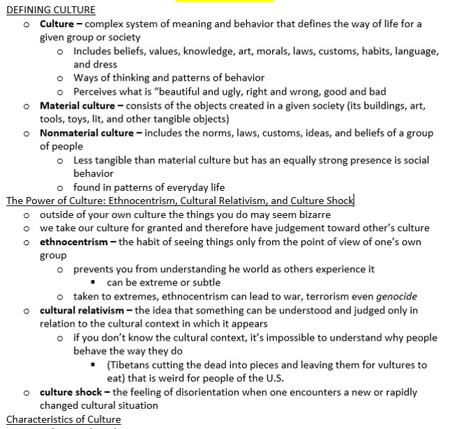
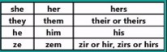

Introduction
Week 2
(9/2-9/6)
Levi Sands
Contact
- Contact Information
- levi-sands@uiowa.edu
- Always email me and I'll get back to you within 24 hours or less
- All emails need to have in the subject line the section number! e.g. (SOC:1010:0A12 or A19 or A26)
- Ask three before me: Look at the syllabus, book, or ask a friend before you come to me
- Office Hours
- SSH W24 (follow the signs to the Beta Waiting Room right next to the blue seats)
- Thursday 12:30-3:30 or by appointment
How to do Well in This Section
- 3 graded assignments
- Weekly in-class activities
- Weekly chapter notes (only one week graded)
- Two documentary essays
- I will only grade some of the in-class activities you won't know which ones
How To Get A 10 On Chapter Notes
- Organized (headings, bolded vocab words, indentations make sense)
- Clearly understands the material
- Definitions are in your own words
- Some people made outside examples of several of the concepts
Example of a 10
Chapter Notes ICON
- If you want to share your chapter notes feel free
- Submit them to the chapter notes assignment discussion and your group members will be able to see them
Documentary Essays
- There will be two, one due in week 7 after the midterm
- One Page sigle space Cilibri or Times New Roman size 12 1" margin
- Clearly watched the documentary
- NOT a summary
- Critical thinking with sociological connections
Acceptable File Formats for Canvas
Do NOT use formats not listed below
- .doc
- .docx
- .txt
- plain text entry in the text box
Discussion Section Goals and Expectations
- Tools
- Skills
- Material
- There will be lots of data presented
- Theory is the explanation of the data
- Exam Hint: learn the vocab contained in the book!
A Little About Me


Activity
- Count off 1-6
- Get into your groups by number
- Introduce yourselves
- Name, preferred pronouns 
- Where is home?
- 2 interesting facts
- Write names of group members onto one sheet you will turn it in to me at the end of class
Group Activity
- Come up with a group name (has to be appropriate)
- Disscuss the following questions in your group
- What is science?
- What steps are involved in making science?

Is Sociology Science?
- I will focus on science in the section
- There will be lots of data presented
- I use stories (anecdotes) to better communicate the data
- Theory is the explanation of the data
Themes
reveal.js comes with a few themes built in:
Black (default) -
White -
League -
Sky -
Beige -
Simple
Serif -
Blood -
Night -
Moon -
Solarized
Themes created by Levi Sands
Udub -
USU -
Uiowa -
Gonzaga -
EWU